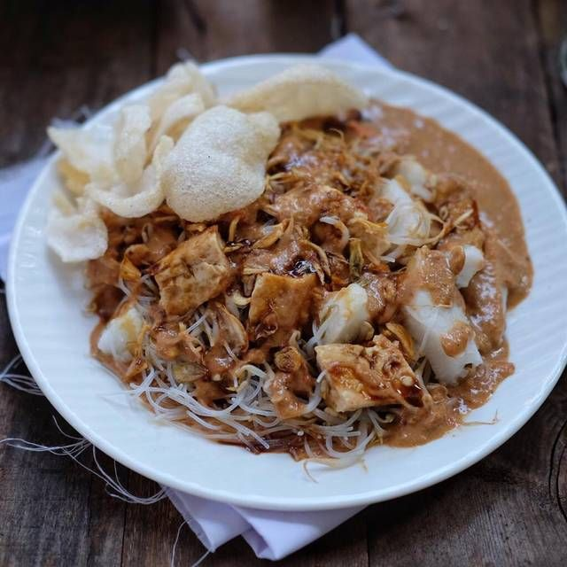
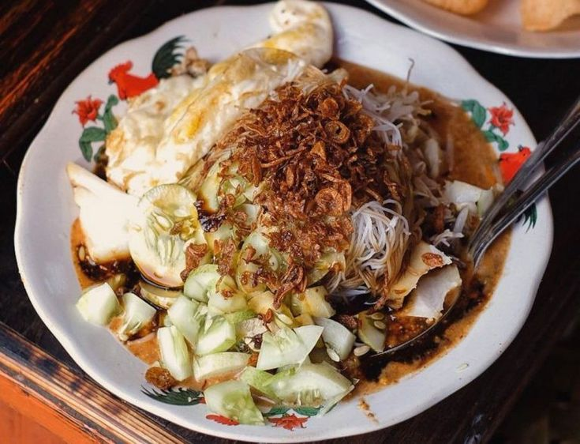
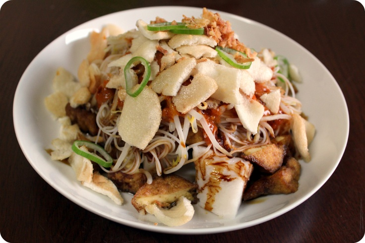

Menu Andalan
Pilihan ketoprak favorit dengan racikan bumbu spesial

Ketoprak Original
Ketoprak klasik dengan lontong, bihun, tahu, tauge, dan kerupuk, disiram bumbu kacang kental yang gurih.
Rp 15.000
Ketoprak Jumbo
Porsi super besar untuk kamu yang lapar! Double lontong, double tahu, telur, bakso, dan siraman bumbu kacang berlimpah.
Rp 30.000
Ketoprak Komplit
Porsi lebih besar dengan tambahan tahu goreng, tauge melimpah, dan taburan bawang goreng renyah.
Rp 20.000
Ketoprak Telur
Ketoprak spesial dengan telur dadar, irisan timun segar, dan bawang goreng di atas piring ayam jago legendaris.
Rp 22.000